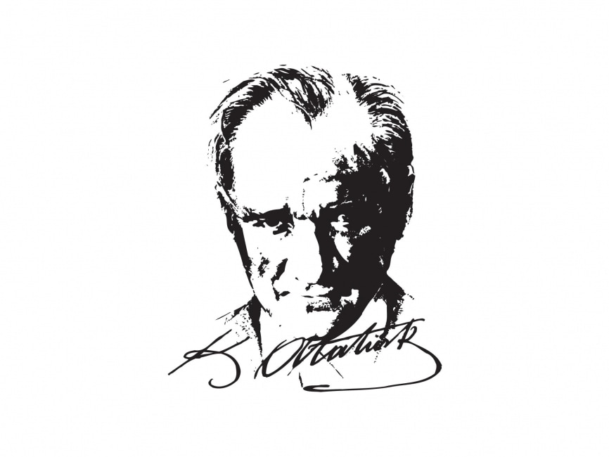

Derse Başlayalım
Her insan bir evde, mahallede, köyde, kasabada veya şehirde yaşar. Yaşadığımız çevrede insanlar, evler, okullar, yollar, parklar, tarihî yapılar ve doğal güzellikler bulunur.
Bizim ülkemiz Türkiye’dir. Türkiye; doğal güzellikleri, tarihî eserleri, farklı gelenekleri, yemekleri, bayramları ve kahramanlık tarihiyle çok zengin bir ülkedir.
- Yaşadığımız çevreyi ve yerleşim yerlerini tanımayı
- Türkiye’nin haritadaki yerini
- Atatürk’ün hayatını ve ailesini
- Millî Mücadele’nin önemini
- Kültürel mirasımızı korumayı
Dersin Hedefleri
🏠 Çevremi tanırım
Yaşadığım yerin özelliklerini fark ederim ve çevreme karşı sorumluluk geliştiririm.
🇹🇷 Ülkemi tanırım
Türkiye’nin haritadaki yerini, başkentini ve önemli özelliklerini öğrenirim.
⭐ Tarihimi öğrenirim
Atatürk’ü, Millî Mücadele’yi ve bağımsızlığımızın önemini kavrarım.
🏛️ Mirasımı korurum
Tarihî eserlerin ve geleneklerin gelecek nesillere aktarılması gerektiğini anlarım.
1. Yaşadığım Çevre ve Yerleşim Yerleri
İnsanların yaşadığı yerlere yerleşim yeri denir. Yerleşim yerleri nüfusuna, büyüklüğüne ve özelliklerine göre köy, kasaba, ilçe ve şehir olabilir.
Köy
Nüfusu daha az olan, tarım ve hayvancılığın yaygın olduğu yerleşim yeridir.
Kasaba
Köyden büyük, şehirden küçük yerleşim yeridir.
İlçe
Bir ile bağlı olan yönetim birimidir.
Şehir
Nüfusu fazla olan; eğitim, sağlık, ulaşım ve ticaret imkânlarının geliştiği yerleşim yeridir.
Aşağıdaki soruları cevapla:
- Çöpleri yere atmamak
- Ağaçları ve bitkileri korumak
- Ortak kullanım alanlarını temiz bırakmak
- Tarihî yapılara zarar vermemek
- İnsanlara, hayvanlara ve doğaya saygılı davranmak
2. Ülkem Türkiye
Türkiye’nin resmî adı Türkiye Cumhuriyeti’dir. Başkentimiz Ankara’dır. Türkiye’nin üç tarafı denizlerle çevrilidir.
- Kuzeyinde Karadeniz bulunur.
- Batısında Ege Denizi bulunur.
- Güneyinde Akdeniz bulunur.
- Türkiye’nin iki kıtada toprakları vardır: Asya ve Avrupa.
- Ülkemizin bayrağı ay yıldızlı Türk bayrağıdır.
Haritada Türkiye’nin komşu ülkelerini, denizlerini ve büyük şehirlerini incele.
3. Atatürk’ün Hayatı ve Ailesi

Çocukluk ve Öğrenim Hayatı
Mustafa Kemal Atatürk, Selanik’te doğmuştur. Eğitim hayatında farklı okullarda öğrenim görmüş ve askerî eğitim almıştır.
Atatürk’ün Ailesi
Atatürk’ün annesi Zübeyde Hanım, babası Ali Rıza Efendi’dir. Ailesi onun yetişmesinde önemli bir yere sahiptir.
1881 – Doğumu
Mustafa Kemal, Selanik’te dünyaya geldi.
1919 – Millî Mücadele’nin Başlaması
Mustafa Kemal, Samsun’a çıkarak bağımsızlık mücadelesini başlattı.
1923 – Cumhuriyet’in İlanı
Türkiye Cumhuriyeti kuruldu ve Mustafa Kemal Atatürk ilk cumhurbaşkanı oldu.
1938 – Atatürk’ün Vefatı
Atatürk, milletine bıraktığı eserlerle yaşamaya devam etmektedir.
Atatürk’ün hangi özelliklerini örnek almak istediğini yaz:
4. Millî Mücadele ve Halkımızın Fedakârlıkları
Millî Mücadele, Türk milletinin bağımsızlığını ve vatanını korumak için verdiği büyük mücadeledir. Bu mücadelede kadın, erkek, genç ve yaşlı birçok insan elinden gelen yardımı yapmıştır.
Atatürk ve Millî Mücadele
Atatürk, milletin bağımsızlığı için çalışmış ve mücadeleyi milletle birlikte yürütmüştür.
Türkiye’nin Zengin Mirası
Türkiye’de tarihî yapılar, doğal güzellikler ve farklı kültürel değerler bir arada bulunur.
Millî Mücadele döneminde insanların hangi fedakârlıkları yaptığını kendi cümlelerinle anlat.
5. Türkiye’nin Kültürel Mirası ve Tarihî Yerleri
Kültürel miras; geçmişten günümüze ulaşan tarihî yapılar, gelenekler, el sanatları, yemekler, müzikler, oyunlar ve bayramlardır. Kültürel mirasımız bize geçmişimizi tanıtır.
Anıtkabir
Anıtkabir, Ankara’da bulunan ve Mustafa Kemal Atatürk’ün naaşının bulunduğu anıt mezardır.
Tarihî Yerlerimizi Koruyalım
- Tarihî yapıların duvarlarına yazı yazmamalıyız.
- Eserlere dokunarak zarar vermemeliyiz.
- Çöplerimizi çevreye atmamalıyız.
- Bu yerleri gelecek nesillere aktarmalıyız.
Somut kültürel miras
Camiler, köprüler, kaleler, müzeler, saraylar ve tarihî evler.
Somut olmayan kültürel miras
Türküler, masallar, gelenekler, halk oyunları, yemekler ve el sanatları.
Millî bayramlar
23 Nisan, 19 Mayıs, 30 Ağustos ve 29 Ekim gibi önemli günler.
Ailenden bir büyüğüne yaşadığınız yöreye ait bir yemek, oyun, türkü veya gelenek sor.
6. Eğlenceli Oyunlar ve Etkinlikler
Türkiye’nin başkenti Ankara’dır.
Atatürk Selanik’te doğmuştur.
Tarihî eserlere zarar vermek kültürel mirası korumaktır.
Öğrendiğimiz konularla ilgili kelimeleri seç:
“Türkiye deyince aklıma...” cümlesini tamamla.
7. Mini Değerlendirme Testi
Puan: 0 / 5
1. Türkiye’nin başkenti hangisidir?
2. Atatürk nerede doğmuştur?
3. Türkiye’nin fiziki ve siyasi özelliklerini gösteren araç nedir?
4. Anıtkabir hangi şehirde bulunur?
5. Hangisi kültürel mirasa örnektir?
🎉 Tebrikler! 🎉
“Yaşadığım Yer ve Ülkem” dersini başarıyla tamamladın.
Bilgili, meraklı ve sorumluluk sahibi bir öğrencisin.
8. Ders Sonu Öz Değerlendirme
Öğrendiklerini kendin değerlendir: